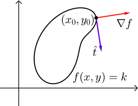
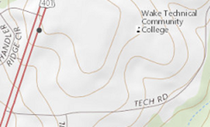

On this page, you will learn to:
- Determine the gradient of a function at a point.
- Solve applications using gradients.
The gradient is a useful mathematical structure involving the partial derivatives that helps us compute directional derivatives and also has a special purpose.
The gradient of a function \(f(x,y)\) is defined as the vector where the components are the partial derivatives of \(f\).
\[\nabla f(x,y) = \langle f_x(x,y),f_y(x,y) \rangle\]Note that we read \(\nabla f\) as "gradient of f" or "del f," and the gradient symbol \(\nabla\) is called the "nabla."
Here are a few more things to consider.
- The gradient of a function \(z = f(x,y)\) is located in the \(xy\)-plane.
- The gradient is used in computing the directional derivative by \(D_{\vec{u}} f(x,y) = \nabla f(x,y) \cdot \vec{u}\).
- The key interpretation of the gradient is that it represents the direction of the greatest value of \(D_{\vec{u}} f(x_0,y_0)\), or the greatest rate of increase of \(f\). In other words, the gradient points in the direction (in the \(xy\)-plane) that corresponds to the steepest incline or ascent of the surface at the point \((x_0,y_0)\). Its magnitude, \(\lvert \nabla f \rvert\), is the slope of the incline. Similarly, the negative of the gradient, or \(-\nabla f\), points in the direction of the greatest rate of decrease, which is the steepest decline or descent of the surface at the point \((x_0,y_0)\) having a slope of \(-\lvert \nabla f \rvert\).
- The gradient can be extended to functions of more than two variables. For example, the gradient of a function of 3 variables is expressed as \(\nabla f(x,y,z) = \langle f_x(x,y,z), f_y(x,y,z), f_z(x,y,z) \rangle\), and therefore the corresponding directional derivative would be \(D_{\vec{u}} f(x,y,z) = \nabla f(x,y,z) \cdot \vec{u}\). In this case, the gradient is a vector in \(xyz\)-space, not the \(xy\)-plane, that gives the direction in which \(f\) is increasing at the greatest rate.
The following GeoGebra applet will help illustrate the gradient of a function \(f(x,y)\) at a point \((a,b)\). You can use the blue point on the \(xy\)-plane to move the corresponding orange point located on the surface of \(f\). You may also click-and-drag to rotate the view around the origin.
- The Gradient is the yellow vector located in the \(xy\)-plane at the blue point \((a,b)\). Observe that the gradient is always perpendicular to the level curve.
- Show the Increasing vector. This green vector shows the steepest incline of the surface of \(f\) at the point \((a,b)\). Imagine if the surface represented a large valley and you were standing at the orange point \((a,b,f(a,b))\). The green vector would be the steepest slope of the valley if you tried walking uphill.
- Show the Decreasing vector. This red vector shows the steepest decline of the the surface of \(f\) at the point \((a,b)\). Again, imagine that the surface represented a large valley and you were standing at the orange point \((a,b,f(a,b))\). The red vector would be the steepest slope of the valley if you tried walking downhill. This means that if you dropped a bucket of water at this point, the water would flow downhill in the direction of the red vector.
- Show the No Change vectors. First, observe that these gray vectors are both perpendicular to the gradient. They represent the direction where the values of \(f\) at the point \((a,b)\) don't change. So \(f\) is neither increasing nor decreasing in these two directions. Again, one more time, imagine that the surface represented a large valley and you were standing at the orange point \((a,b,f(a,b))\). The gray vectors would represent the direction you could walk and remain at the same altitude - you could walk all the way around the pink curve without changing your altitude.
The following video demonstrates how we can compute the gradient of a function.
Level Curves & Tangent Planes
There are a couple quick applications of the gradient that we can look at, in addition to the directional derivative. The first uses the fact that the gradient is perpendicular to the level curve of a function, as illustrated below. This also means the gradient vector \(\nabla f\) is perpendicular to the unit tangent vector \(\hat{t}\) at the specified point.

Consider the contour map of the region around the Southern Wake Tech campus shown below. We can see several level curves marking incremental changes in altitude.

Suppose a person standing at the intersection of Tech Road and U.S. 401 decided to walk towards campus along the steepest route. Draw the estimated path the student would walk.
The second application of the gradient involves tangent planes, which we learned about earlier. If we have a function \(F(x,y,z) = 0\) that defines \(z\) implicitly as a function of \(x\) and \(y\), then the gradient is the normal vector to the surface and the equation of the plane tangent to \(F\) at the point \((x_0,y_0,z_0)\) can be expressed by the following equation.
\[F_{x}(x_0,y_0,z_0)(x-x_0) + F_{y}(x_0,y_0,z_0)(y-y_0) + F_{z}(x_0,y_0,z_0)(z-z_0) = 0\]This should look familiar since it matches the tangent plane equation we saw earlier, as demonstrated in this video.